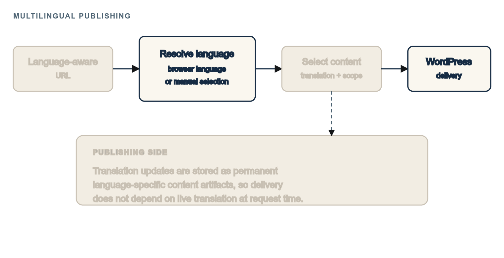
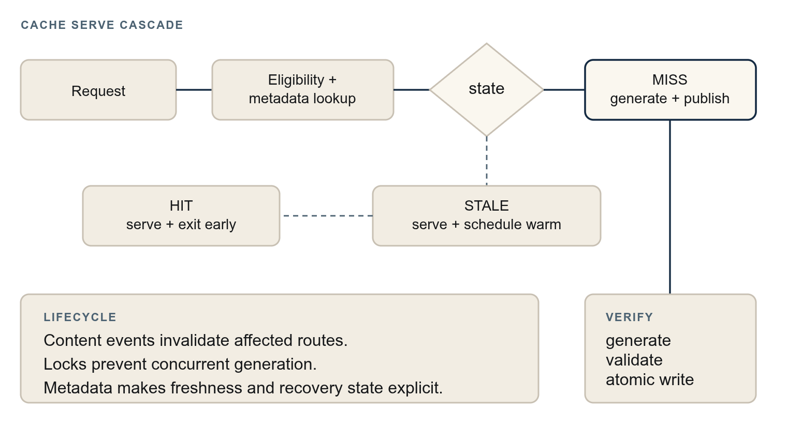
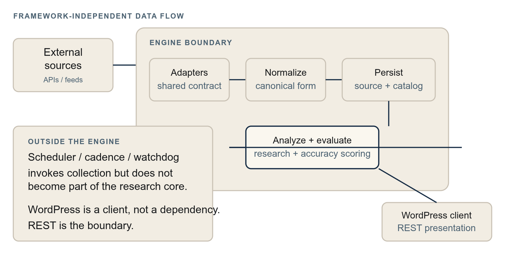
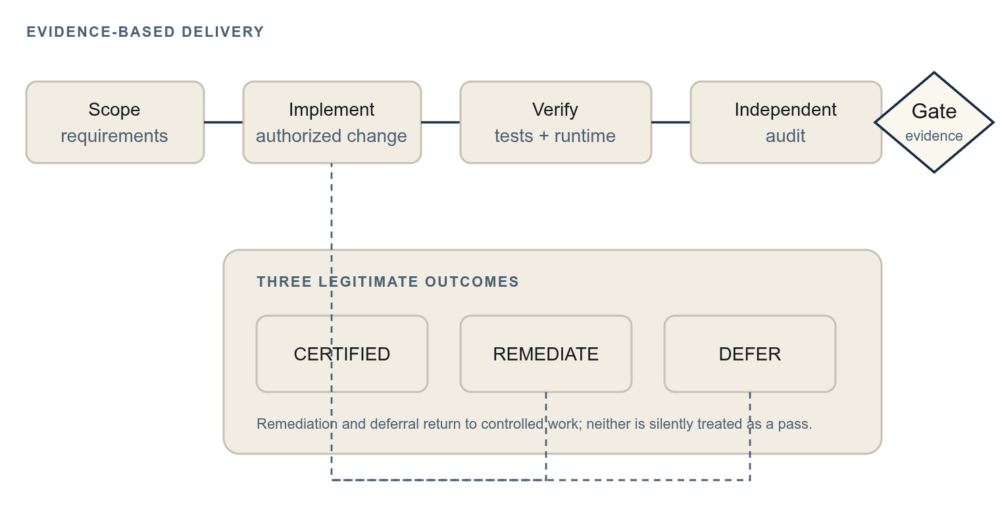
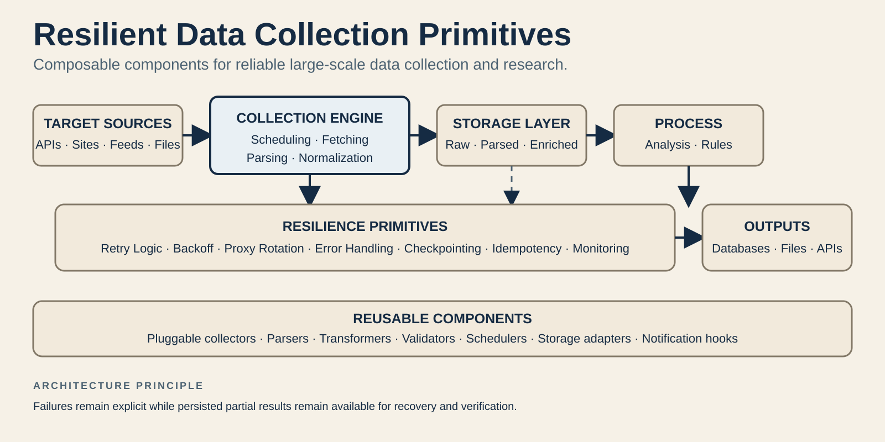
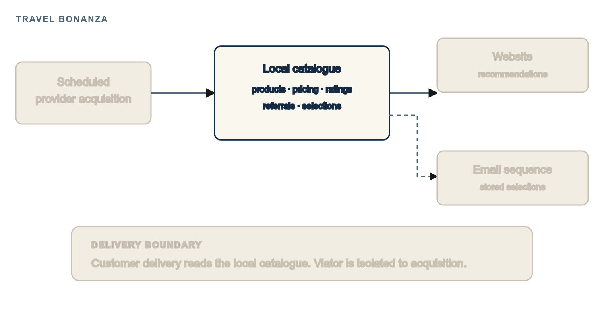
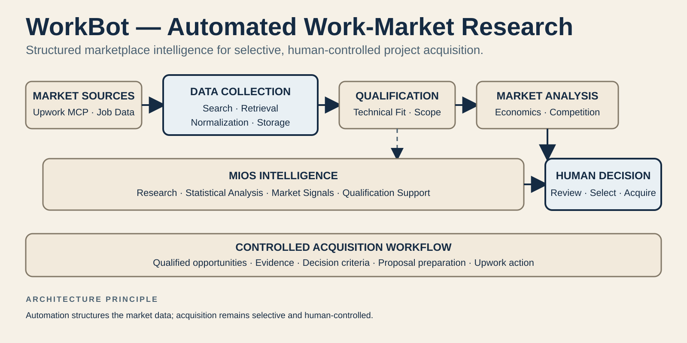

A travel-publishing platform built on custom WordPress architecture, engineered for multilingual content,
global performance, data integrations, automated workflows, consent management, and more.
A live performance test of siemreapinside.asia, measured by GTmetrix from Seattle, USA, to Siem Reap, Cambodia — a distance of roughly 7,300 miles (12,000 km).
I work particularly well with existing systems that need to be understood before they can be changed. That means auditing a codebase or infrastructure, tracing the problem to the underlying cause, documenting what is actually happening, then making targeted changes and verifying the result with documented evidence.
01DiscoveryEstablish the system, scope, dependencies, and current state.
02AuditExamine the codebase or infrastructure and identify relevant failure points.
03Smoke TestingReproduce the behavior and establish a reliable baseline.
04DiagnosisTrace the symptom to its underlying technical cause.
05RemediationMake targeted changes without unnecessary rewrites.
06VerificationTest the result and document the evidence that the system behaves as intended.
Whitepapers
Selected engineering systems, architectures, and technical implementations from larger production projects.
01Multilingual PublishingA custom WordPress multilingual architecture that routes and manages
content, automatically propagates atomic translation updates, serves content through multiple API-accessed
languages, and stores translations as permanent artifacts.PHP · WordPress
Context
The system is a production multilingual publishing platform: a
content-heavy WordPress site publishing English and additional
languages, including non-Latin scripts.
URLs identify a language, requests resolve to the correct
translation, listings and feeds remain language-scoped, and
editors use a managed translation workflow rather than
hand-edited duplicates.
Problem
WordPress does not natively provide the properties this system needed:
Language-prefixed routing. Language paths resolve to that language while plain
URLs continue serving the default language.
Translation resolution. A language and path resolve to the correct translation,
including controlled review drafts.
Native-language slugs. Percent-encoded Unicode slugs work through WordPress
permalink handling.
Query separation. Archives, feeds, and listings remain inside the request
language.
Constraints
Draft translations can exist pending review, but draft access must remain controlled.
An explicit URL prefix always wins; Accept-Language is used only without a language
signal and only for existing translations.
Only approved deployed languages may be routed; an arbitrary two-letter prefix is not a language.
Architecture
A dedicated WordPress request pipeline establishes language
context early, resolves native-language slugs and translations,
and constrains later queries before rendering and page caching.
Editorial operations are separated from request resolution:
translation jobs, field-level content, operation logging,
translation memory with field-level hashing, provider
integration, WP-CLI batch processing, locale switching, and a
custom administration interface.
Router and context. Prefix detection establishes one request-language source of
truth.
Resolver and query enforcer. Translated posts and language-scoped listings are
selected before rendering.
Slug handling. Native Unicode slugs are stored and resolved in WordPress's
encoded form.
Staleness control. Field hashes identify changed source text without invalidating
whole posts.
Fallback policy. Browser language is an allowlisted fallback; explicit prefixes
remain canonical and unambiguous.
Controlled drafts. Review translations are resolved through query-layer rules
without changing stored post status.

Language selection and routing: language URLs resolve directly, English URLs can use
browser language automatically or remain English, and the manual translation selector is an optional
visitor control.
Outcome
The resulting subsystem combines language routing, translation
resolution, language-scoped queries, editorial translation
operations, provider integration, batch tooling, and
administration inside one testable WordPress architecture.
Sanitized code examples
These two public-safe examples isolate representative
engineering patterns from the larger private system. The
complete source and tests remain available through the linked
files.
Protected-token translation validator.
Verifies that protected URLs, shortcodes, and entities survive
machine translation before reconstruction, checking missing,
extra, duplicate, and altered markers.
Overview,
source,
tests.
Accept-Language locale matcher.
Negotiates an HTTP language header against an allowlist,
handling q-values, q=0 rejection, region subtags, stable
tie-breaking, and default-language fallback.
Overview,
source,
tests.
Verification
Evidence held in the private project record includes:
The documented architecture comprises approximately 15,700 lines across
approximately 30 component classes.
More than 25 dedicated multilingual test files covering routing, slug-boundary behavior, lifecycle
and staleness, feed isolation, cache-language interaction, hook ordering, and certification
integrity.
Formal certification and freeze artifacts for the architecture, produced under the project's
documented verification workflow.
A recorded regeneration exercise in which 24 stale translations were re-run through the pipeline
and verified for field hashes, relationships, and publication state.
These are historical project documents: they establish that the work passed formal
verification gates at the time, and are not presented as live runtime certification of the system
today.
Limits
This is a purpose-built architecture for one production platform — not a plug-and-play
multilingual product, and no claim is made that it drops into an arbitrary WordPress installation
unchanged.
The production codebase is private; this page describes the architecture rather than publishing
it.
Certification evidence cited above is historical — it should not be read as current runtime
verification.
No traffic, ranking, revenue, or accuracy outcomes are claimed; the evidence supports the
engineering itself, not downstream business metrics.
02Full-page Caching
A custom WordPress full-page cache that serves verified HTML by route,
invalidates affected content, and regenerates entries with bounded staleness and atomic publication.
PHP · WordPress
Context
The platform is a production WordPress site behind a CDN. Most
traffic is anonymous and content changes are editorial, so
repeatedly rendering unchanged pages wastes work; a cache that
silently serves stale content or masks failed generation is
worse than no cache.
The required lifecycle was therefore predictable: content
changes invalidate the right routes, regeneration proves that
fresh HTML was captured, and metadata makes failures and
recovery state inspectable.
Problem
Complete capture. HTML must be written without allowing corrupt or partial files
to reach visitors.
Route synchronization. Posts, menus, settings, terms, and slug changes must
invalidate every affected route, including old slugs.
Concurrency. Requests for the same missing page must not race while generating or
publishing.
Failure visibility. An HTTP 200 through a CDN is not proof that fresh HTML was
captured; ghost entries and stale locks need recovery paths.
Constraints
Lifecycle position. The engine runs at template_redirect after
WordPress, plugins, theme, and the main query have bootstrapped; it skips rendering and page
generation, not bootstrap.
Only safe GET/HEAD requests are cacheable: no logged-in users, admin, REST, AJAX, feeds, search,
previews, or non-canonical query strings.
Stale content is permitted only inside a bounded invalidation grace window; TTL is a safety
fallback, not the primary freshness mechanism.
Because regeneration runs behind a CDN, status markers must be cross-checked against generation
timestamps and stored metadata.
Architecture
Each eligible request resolves to a canonical route and consults
a metadata registry. A valid entry is served as HIT; an
invalidated entry remains STALE only within the bounded grace
window while a warm is scheduled; a missing or expired entry
becomes MISS and enters capture.
Per-route state. Metadata records generation time, duration, invalidation state,
and pending work; one lock controls capture and expires after a dead worker.
Atomic publication. HTML is written to a temporary file, checked for minimum size
and error output, then renamed into the live path.
Event-driven invalidation. Publish, update, delete, trash/restore, slug, menu,
customizer, term, and front-page changes invalidate the affected route, listings, or site as
appropriate.
Verified regeneration. A status marker, generation timestamp, and metadata
freshness agreement are required; the response header alone is not trusted.
Recovery. Health checks, alerting, stale-lock handling, and ghost-entry
reconciliation are explicit tested behaviors.

Serve first, regenerate safely: HIT exits early, STALE remains bounded, and MISS passes
through verified generation before publication.
Outcome
The result is a route-addressed cache lifecycle that makes HIT,
bounded STALE, and MISS decisions explicit, while separating
ordinary CDN/browser caching from origin cache-engine behavior.
Verification
Evidence held in the private project record includes:
A custom subsystem of roughly 4,000 lines, including the engine, administration
interface, and lifecycle wiring.
Eight dedicated test files covering invalidation coverage, metadata concurrency, state-agreement
invariants, ghost-entry reconciliation and recovery, and alert/remediation behavior.
Formal certification and freeze documentation for the module.
This is historical project evidence: it documents what passed a
formal gate at that point, not current runtime verification.
The record also documents later drift between certified values
and current constants.
Limits
The cache does not bypass the WordPress bootstrap; it saves template rendering and page generation
at template_redirect.
It is not a web-server static-file cache; no advanced-cache.php drop-in or nginx
cache-serving configuration is part of this implementation.
CDN/browser hits may bypass the origin, but that is generic HTTP caching, not a property claimed
by this engine.
The production codebase is private, and no performance percentages, throughput figures, or traffic
outcomes are claimed.
03Research & Data Engine
A framework-independent Python research engine that acquires, normalizes,
persists, and evaluates external data through source adapters and a REST boundary.
Python · Data
Context
The private research platform presents outputs through
WordPress, but its analytical core must outlive any CMS, run
unattended, and remain testable without a web framework.
It acquires data from external sources, keeps an auditable
record of collection, runs staged analysis, and measures the
accuracy of probabilistic forecasts against resolved outcomes.
Problem
Heterogeneous sources. APIs, authentication, cadences, and payload shapes must
not leak source-specific assumptions into the core.
Canonical data. Incompatible representations need normalization before analysis.
Auditable persistence. What was collected, when, from which source, and with what
integrity must remain reconstructable.
Empirical evaluation. Probabilistic outputs need scoring against observed
outcomes rather than assumed quality.
Unattended operation. Scheduling, locking, rate limiting, and failure isolation
are part of the system boundary.
Constraints
Framework independence. The engine runs from the CLI and over REST with zero
WordPress dependencies, enforced by a dedicated test.
WordPress as client. PHP-to-Python traffic crosses one token-authenticated REST
boundary; presentation and control stay in the client.
Per-source isolation. Each source supplies a collector/storage pair against a
shared contract.
External orchestration. Schedulers use a per-source cadence registry, while
lock-guarded collectors prevent overlap.
Draft output. Automation stops at private research drafts; the engine does not
publish or act on conclusions.
Architecture
A framework-independent Python engine—roughly 59,000 lines
across about 200 modules—exposes a CLI and a small
token-authenticated HTTP server. The server is the sole
boundary between WordPress and the background research
pipeline.
Acquisition. Nine source-specific adapter packages provide collectors and storage
modules behind a shared contract; the collection framework supplies specifications, locks, rate
limiting, and pagination.
Persistence. Source stores write canonical records, an ingestion catalog records
collection and integrity, and SQL migrations manage schemas.
Analysis. Immutable domain objects support valuation and recommendation
boundaries; calibration supplies metrics and significance testing.
Evaluation. A forecast ledger resolves predictions against observed outcomes,
computes versioned Brier scores, and supports counterfactual evaluation.
Operations. Cadence registries, cron dispatchers, cleanup, and a health watchdog
run collection unattended; the WordPress client receives private drafts over REST.

The research core owns acquisition, normalization, persistence and analysis; scheduling
and WordPress remain outside its boundary.
Outcome
The system separates source acquisition, durable evidence,
analysis, evaluation, orchestration, and presentation so each
boundary can be tested without making WordPress part of the
research core.
Verification
Evidence held in the private project record includes:
The engine and its approximately ~10,500-line WordPress thin client are measured
separately; nine adapters and two provider implementations sit behind shared contracts.
More than 130 Python test files plus a TypeScript client spec suite, including a
test enforcing independence from WordPress.
Formal certification and freeze records for major subsystems, with verification, remediation, and
independent audit documents.
These are historical project documents: they establish what
passed formal verification gates when certified, not that every
component or historical suite is currently passing. Suite
sizes indicate coverage breadth, not a runtime guarantee.
Limits
The production codebase is private; this page describes the architecture rather than publishing
it.
No accuracy percentages, performance benchmarks, or business outcomes are claimed; internal
scoring exists but its figures are not published.
Certification evidence is historical and should not be read as current runtime verification.
Collection cadences and source sets are configured for one deployment, not a general-purpose
product.
The WordPress component is a thin client for this engine, not a portable plugin for arbitrary
WordPress sites.
04Verification & Certification
An evidence-based delivery process that verifies implementation, tests
runtime behavior, audits independently, and records certification, remediation, or deferral.
Python · PHP · Testing
Context
The process governs long-lived private systems: a production
WordPress publishing platform and a framework-independent
research engine that run unattended, serve or collect real
data, and accumulate changes over years.
Its purpose is to prevent unfinished work from appearing
finished. A feature that should work, a test that once passed,
or a months-old certification does not prove current behavior.
Problem
Scope. Every unit of work needs explicit requirements, including prohibited
changes.
Implementation truth. Code and configuration must be checked as they actually
exist, not as intended.
Runtime truth. A scheduled job in a repository is not proof that the live system
executes it.
Failure recovery. Breakage and recovery paths must be exercised rather than
assumed.
Independence. Review must be structurally separate from the session that
implemented the work.
History. Certification, remediation, and deferral records must remain auditable
when later evidence changes the verdict.
Constraints
Evidence over assumption. Verdicts cite source inspection, test results, or
runtime observation.
Independence. Verification uses a fresh review context against the authorized
requirements, and certification is performed by a non-implementing reviewer.
Current state wins. Current source and runtime evidence outrank historical
certification.
No manufactured evidence. Synthetic or staged results are not presented as
production behavior.
Honest outcomes. Not certified, remediation, and deferral are legitimate recorded
outcomes; an audit reports rather than quietly repairs.
Architecture
Work moves through scope, authorized implementation, focused
testing, independent verification, independent certification,
and a frozen baseline. Each stage has its own evidence and
verdict; a material defect returns the work to remediation
rather than being silently passed through.
Requirements matrix. Verification checks explicit positive and negative
boundaries.
Evidence classification. Findings are documented, source-verified,
runtime-verified, test-verified, hypothesized, or blocked on insufficient evidence.
Operational evidence levels. Automatic behavior must be declared, installed,
enabled, executed organically, and persisted before it is treated as demonstrated.
Record preservation. Prompt records, decision logs, evidence manifests,
remediation, certification, and freeze reports preserve scope, rationale, artifacts, and exclusions.
Managed deferral. Deferred items are classified and revisited; they are not
silently absorbed into a pass.

Certification is a gate, not a formality: the evidence can produce certification,
remediation, or deferral.
Outcome
The process produces an auditable distinction between
implementation status and certification status, with explicit
scope, exclusions, remediation, deferral, and historical
baselines.
Verification
Evidence held in the private project record includes:
Per-subsystem test harnesses, regression suites, static analysis, runtime health checks, and
evidence manifests.
Independent audits and hostile re-audits that compare prior conclusions against current source and
runtime behavior; one re-audit downgraded unsupported “all verified” claims.
Certification gates requiring implementation, focused tests, relevant regressions, runtime
verification where required, integrity checks, current documentation, and a clean version-control
state.
Explicit verdicts of certified, not certified, or blocked, with the certified scope and exclusions
recorded.
Certification is point-in-time evidence. A historical record is
preserved rather than rewritten when later drift or evidence
changes the current state.
Limits
Certification records document what passed a gate when it ran; they do not claim that every
component or historical suite is currently healthy.
Suite sizes describe coverage breadth, not a guarantee of passing state.
The process is deliberately heavyweight for long-lived production systems and disproportionate for
trivial changes.
Much verification uses scripted harnesses within the lifecycle rather than a third-party CI status
badge.
The systems and records are private; this page describes the process without publishing internal
reports or operational data.
05Resilient Collection Primitives
Four collection primitives that paginate safely, pace requests, apply
bounded retry backoff, and prevent overlapping scheduled runs.
Python · Data collection
Context
These primitives support scheduled multi-source collection
where partial results, provider pacing, transient failures, and
scheduler overlap must be handled explicitly.
They isolate reliability behavior so the surrounding collector
can decide how to handle a failure without losing already
collected data or depending on a large framework.
Problem
Paginated endpoints can fail after earlier pages have already been collected.
Rate-limited providers require a minimum interval between operations.
Transient failures need bounded, jittered retry backoff and provider-directed
Retry-After handling.
A scheduler can start a second run before the first completes, corrupting or duplicating work.
Constraints
Each primitive remains small, dependency-light, and independently testable.
Clock, sleep, retry floor, and provider delay inputs remain injectable rather than requiring real
time or HTTP responses in tests.
Locking must be non-blocking and crash-safe; the implementation uses kernel-managed
flock.
Pagination failures must be observable to the caller instead of silently discarding partial
results.
Architecture

Resilient collection boundary: failures are handled explicitly while persisted partial results remain available for recovery and verification.
Resumable offset pagination. Yields an offset and failure value so the caller
chooses whether to keep partial results or abort.
Interval pacing. Sleeps only the remaining interval and returns immediately when
caller work has already consumed the delay.
Bounded exponential backoff. Applies ±25% jitter, honors a provider floor, and
caps Retry-After through the documented maximum.
Advisory run lock. A non-blocking flock lock returns a skipped
result for overlap and is released by the kernel after a crash.
Outcome
The four concerns remain independently testable and can be
composed by a scheduled collector without embedding pagination,
pacing, retry, or overlap policy in each provider adapter.
Verification
The existing primitive tests cover pagination termination and
failure yields, pacing timing, jittered and capped backoff,
Retry-After handling, and non-blocking lock
behavior. The lock tests use fcntl.flock, which
is Unix-specific.
Limits
These are isolated primitives, not the complete multi-source collection framework, provider
adapters, specification registry, or lifecycle manager.
They preserve the engineering behavior without publishing private provider names, work-package
references, or production file paths.
The advisory lock relies on Unix fcntl.flock semantics.
06Travel Bonanza
An SRIA engineering facet representing the Travel Bonanza publishing
experience, presented as technical architecture and flow rather than a standalone product.
PHP · SQL · JavaScript · API · CRON
Context
Travel Bonanza combines a local travel catalogue with a staged
email sequence and a frontend recommendation experience. The
architecture treats provider acquisition and customer delivery
as separate responsibilities.
Problem
Recommendations must remain consistent across signup, the
email sequence, and the frontend without making each customer
interaction dependent on a live Viator request. Repeated
provider calls would couple delivery to external latency,
availability, rate limits, and changing catalogue responses.
Constraints
Viator is called only by the scheduled acquisition path; customer delivery does not call the
provider.
Daily catalogue refresh and manually triggered administrative refresh are the permitted
acquisition operations.
The local catalogue must retain the product, structured, language, sale, referral, image, pricing,
rating, and email fields needed by delivery.
Frontend and sequence reads are read-only against the local cache.
Stage 1 selects three tours once using budget, on-sale status, and rating; later stages use those
stored selections.
Architecture
The boundary is deliberately one-way:
external API acquisition → local catalogue/cache → read-only customer delivery.
Viator Sandbox data is acquired through System Cron into the
complete wp_sria_bonanza_products catalogue. The
cache is then the source for both the frontend signup path and
the backend sequence.

Closed-loop architecture: Viator is isolated to acquisition, while the catalogue and
stored selections serve customer delivery.
Implementation
The acquisition pipeline discovers the Siem Reap catalogue,
paginates the provider search, normalizes product data, applies
eligibility rules, enriches qualifying products, and writes a
refresh-token generation to the dedicated catalogue. The prior
generation is removed only after the new set is fully written;
a failed refresh leaves the previous valid pool available.
Delivery reads local product rows and applies the documented
candidate rules: budget filtering, a minimum rating threshold,
and review-count ordering with deterministic ties. The welcome
stage stores three selected tours for the run. Stages 2–4 use
those stored selections, and stage 5 completes the sequence;
none of these stages makes an external API call.
The email path stores recommendation and send records, uses
Plunk for delivery and correlation, and keeps acquisition
outside the send boundary. The frontend recommendation path
likewise resolves product and referral data from the local
catalogue rather than fetching from Viator at request time.
Verification / Evidence
The private SRIA project includes PHPUnit coverage for the
acquisition pipeline, including pagination, normalization,
eligibility, localized catalogue rows, staged refresh behavior,
failed-refresh preservation, and local-catalogue reads. The
sequence and Plunk components also define stage progression,
send-record idempotency, delivery correlation, and retry or
reconciliation behavior.
These are implementation and test records from the private
project. They establish the documented boundaries and covered
behaviors; no current runtime pass rate or production metric
is claimed here.
Outcome
Acquisition can refresh the catalogue without putting Viator
calls on the customer path. The frontend and email sequence
consume the same local data boundary, while the stored Stage 1
selections keep the remaining delivery stages stable for that
run.
Limits
Delivery freshness depends on the most recent successful catalogue refresh.
Frontend and sequence delivery do not provide real-time provider availability; they use the stored
catalogue boundary.
Acquisition failures can leave the active catalogue stale until a later refresh succeeds.
The architecture is specific to the Travel Bonanza subsystem and its Viator/Plunk integrations.
The private implementation and operational data are not published; this paper describes the
boundary and evidence scope only.
07WorkBot — Automated Work-Market Research
A private automation system for researching technical work markets, qualifying opportunities, and supporting a controlled, human-reviewed acquisition workflow.
Python · Market research · Automation · Upwork MCP
Context
WorkBot is a private automation system for investigating paid technical work opportunities.
Its purpose is to turn marketplace activity into structured information that can be researched,
filtered, qualified, and presented for controlled acquisition decisions.
The project is deliberately separated from MIOS's prediction-market domain. WorkBot may reuse
MIOS infrastructure and architectural patterns, but it owns its work-market domain logic.
Problem
Raw marketplace listings are not sufficient for acquisition decisions. WorkBot needs to collect
opportunity data, distinguish relevant technical work from unsuitable projects, examine scope and
commercial characteristics, and preserve enough evidence for later analysis.
The documented discovery work therefore treats collection, qualification, market analysis, and
acquisition as separate stages rather than collapsing them into an unrestricted bidding process.
Architecture

WorkBot separates marketplace collection and intelligence from the human-controlled acquisition decision.
The intended dependency direction is WorkBot → MIOS shared infrastructure, not MIOS core →
WorkBot. WorkBot-specific domain logic remains outside MIOS's prediction-market logic.
Market Collection
The documented WorkBot architecture uses marketplace connectors and collection workflows to
acquire structured opportunity data. The current acquisition architecture uses the official
Upwork MCP for marketplace access, with collection and retrieval separated from later analysis.
Earlier WorkBot discovery work established the need for persistent collection, normalization,
evidence preservation, and repeatable sampling rather than relying on individual manual searches.
Qualification
Qualification is domain-specific WorkBot logic. The documented model separates raw market data
from technical fit, scope, budget, competition, client characteristics, and other acquisition
signals. The objective is to produce an opportunity queue rather than automatically treating every
matching listing as a job to pursue.
The acquisition research also distinguishes short-duration technical opportunities from unsuitable
long-term or full-time work and uses evidence from collected marketplace records to support the
qualification process.
MIOS Boundary
MIOS provides research and intelligence infrastructure; WorkBot provides the work-market domain.
The documented boundary allows WorkBot to reuse generic MIOS infrastructure such as orchestration,
pipelines, execution conventions, data infrastructure, operational controls, and governance where
dependency tracing shows that reuse is appropriate.
Prediction-market schemas, market-specific collectors, forecasting logic, valuation, prediction
scoring, weather or market-specific analytical models, and MIOS-specific research workflows remain
outside the WorkBot domain.
Human Control
The documented acquisition architecture is human-in-the-loop:
market data → MIOS intelligence and qualification → opportunity queue → human review → WorkBot execution → marketplace connector.
This boundary keeps research and qualification automated while retaining a controlled decision point
before acquisition activity. WorkBot is therefore an operational workflow, not an unrestricted
autonomous bidding system.
Evidence & Status
WorkBot discovery has included controlled marketplace collection, capability and policy research,
competition analysis, acquisition-model research, and structured economic analysis. The documented
roadmap places this work in a staged sequence: economic viability, MCP/MIOS feasibility, then
WorkBot refactoring and implementation feasibility.
The architecture described here is therefore the documented target architecture for the project;
the whitepaper does not claim that every proposed WorkBot component is already implemented.
Limits
WorkBot implementation is dependent on the documented economic and MCP/MIOS feasibility gates.
Marketplace data is time-sensitive and must be treated as a collected evidence set rather than a permanent representation of supply.
Qualification logic is WorkBot-specific and must not be embedded into MIOS's prediction-market domain.
Automation does not remove the need for controlled human acquisition decisions.
The implementation and operational data are private; this paper describes the architecture and documented research process without exposing proprietary code or credentials.
Most of my work involves taking complicated web systems and making them work properly — whether that means
building
something new, fixing what has broken, or improving how it performs.
Marc WebOps
WEB ENGINEERING | SYSTEMS | AUTOMATION
I've worked with IT and Linux systems for roughly 30 years, initially alongside my work in education and later increasingly through web development, systems engineering, and software architecture. I studied writing, literature and visual art in the US, and my path has gradually taken me from education into technology, web development, and design.
Technical Focus
WordPress / PHP
SQL / Data systems
JavaScript / Modular Features
Server Stacks | nginx/apache2
Automation / Scripting
Performance / Reliability
How I Work
I work practically and methodically. I start by understanding the existing system — its architecture,
documentation,
dependencies, and current state — before deciding what needs to change. I keep implementation controlled and
traceable,
then verify that the system behaves as intended and measure the results against evidence before considering
the work
complete. Hire me on Upwork (opens in a new tab).
About This Portfolio
This portfolio presents selected technical work from larger real-world systems. The whitepapers document
architecture, engineering decisions, implementation approach, and evidence without exposing proprietary
code. Visit my public flagship project siemreapinside.asia (opens in a new tab).